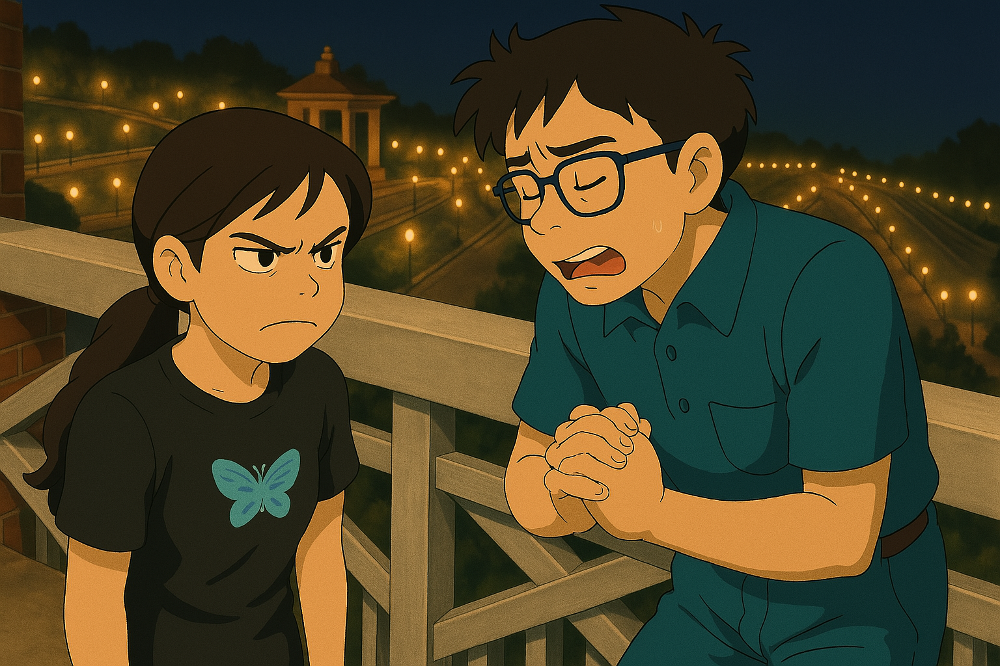
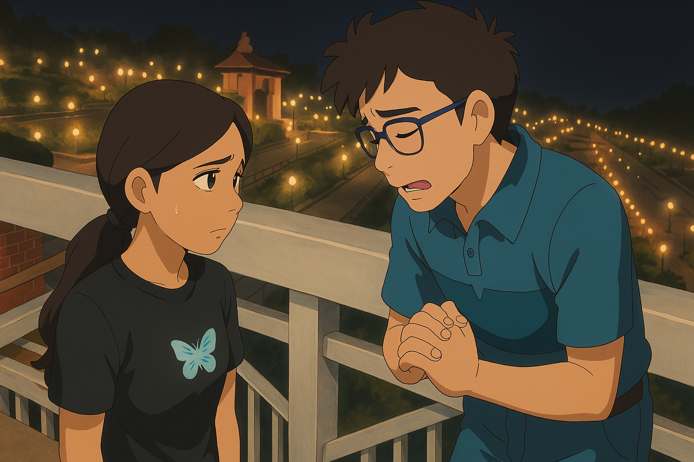
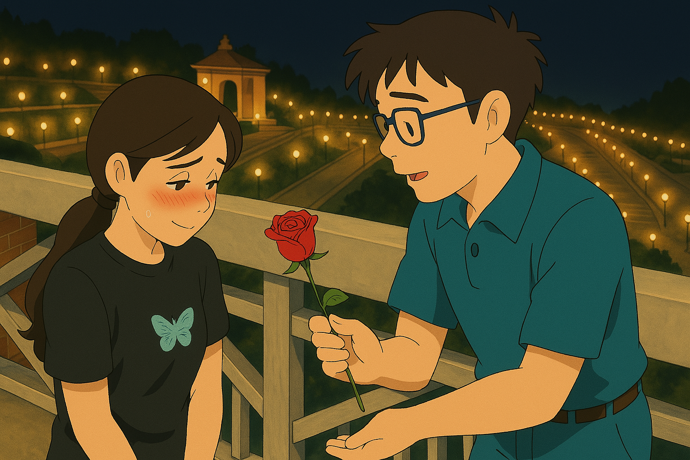

I have been thinking a lot about us, and about the moments when you needed me but I was not there the way I should have been. I know saying sorry cannot suddenly make everything feel okay, but I still wanted to say it honestly, from my heart.
I am really sorry for not being able to talk whenever you needed me, for not giving you enough time, and for making you feel alone when you should have felt cared for. You deserved my attention, my presence, and my time — especially on the days when you needed me most,I had promised it,but i made excuses,I am extremely sorry for breaking your heart.
Sometimes we do not realize the value of small moments until they become the very thing we miss the most. I miss hearing about your day, the things that made you smile, and even those quiet moments when nothing special was happening but talking to you still made everything feel lighter.
You are truly special to me, Sruti- My lovey-Dovey. Maybe I do not always express it properly, but you matter to me more than my words often show. I never wanted my lack of time to make you feel less important, because the truth is exactly the opposite.
I am not writing this to force a reply or to make you forget what hurt you. I only wanted you to know what is in my heart.Forgive me and give me a chance. If I could change one thing, I would have been there more — listened more, understood more, and made more time for you at that night.
No matter how things are right now, I will always be grateful for you. Whenever you feel ready, I would love to talk. Until then, please remember this — you are precious to me, my dhana.You are always mine.